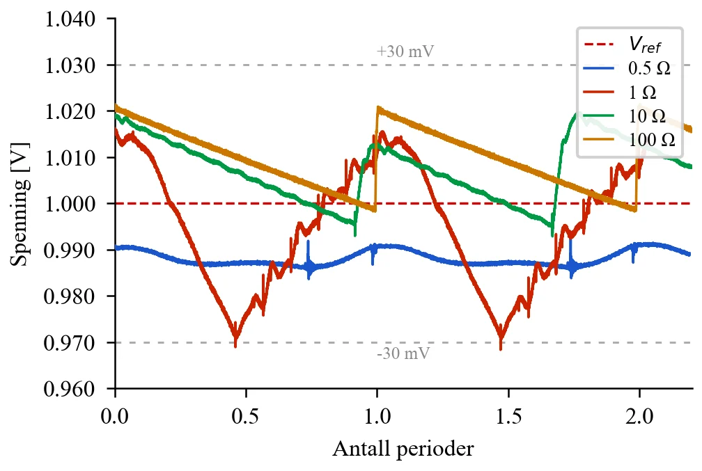
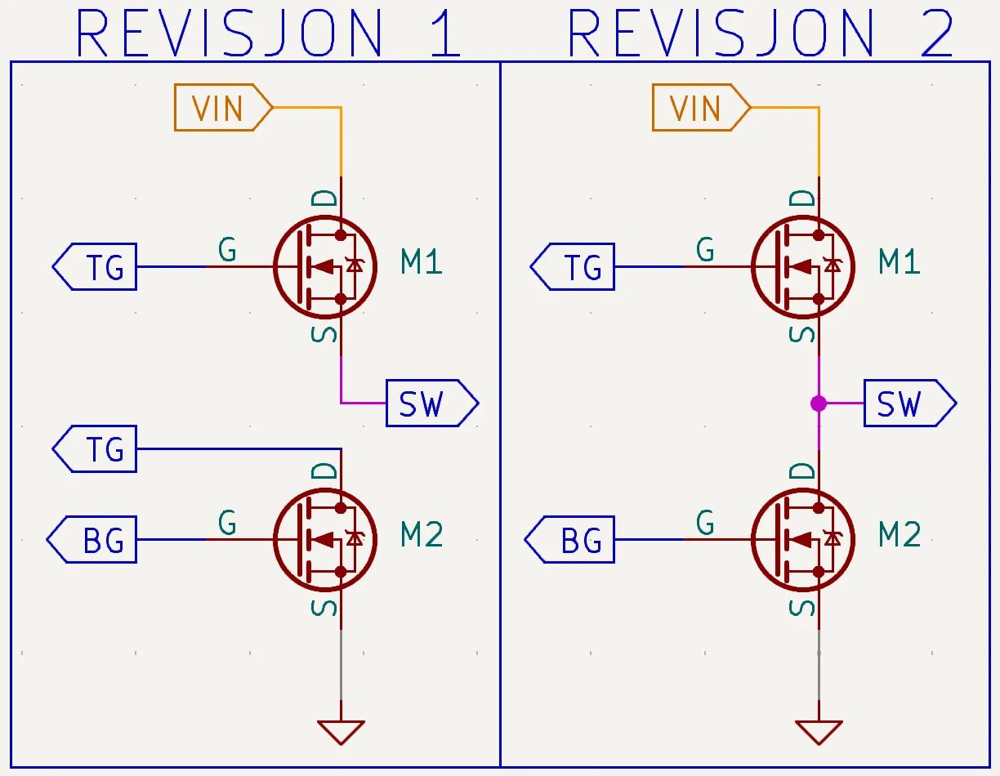
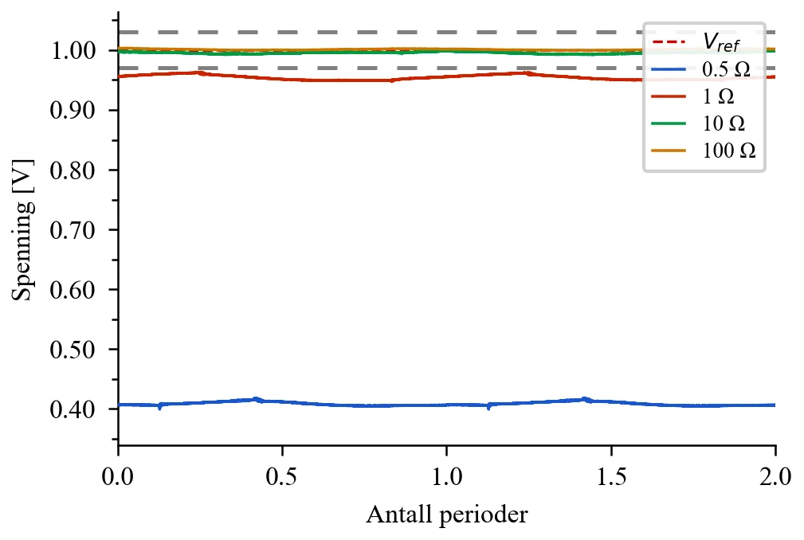
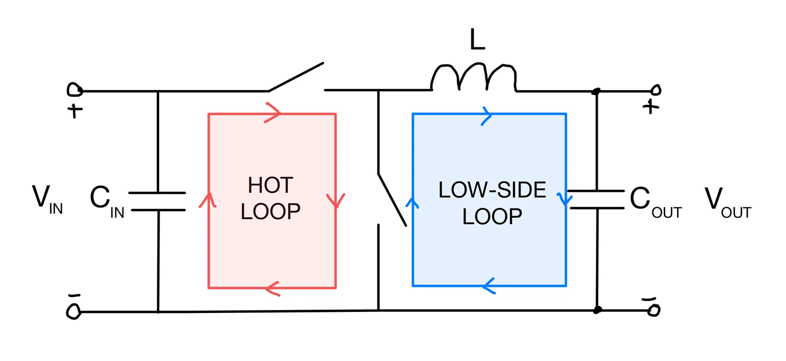
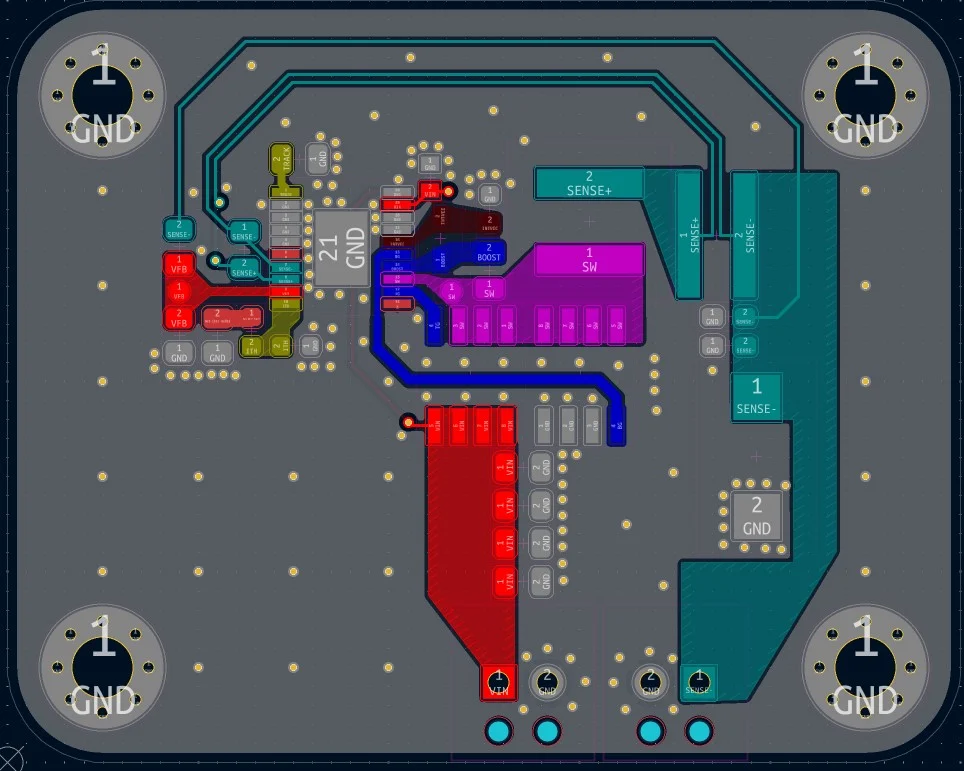
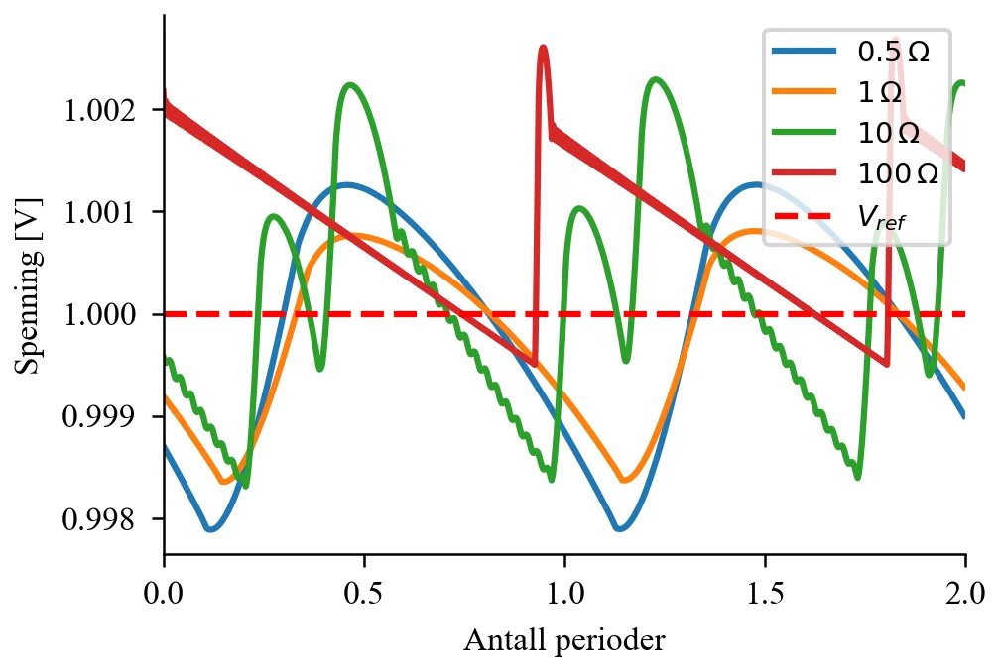
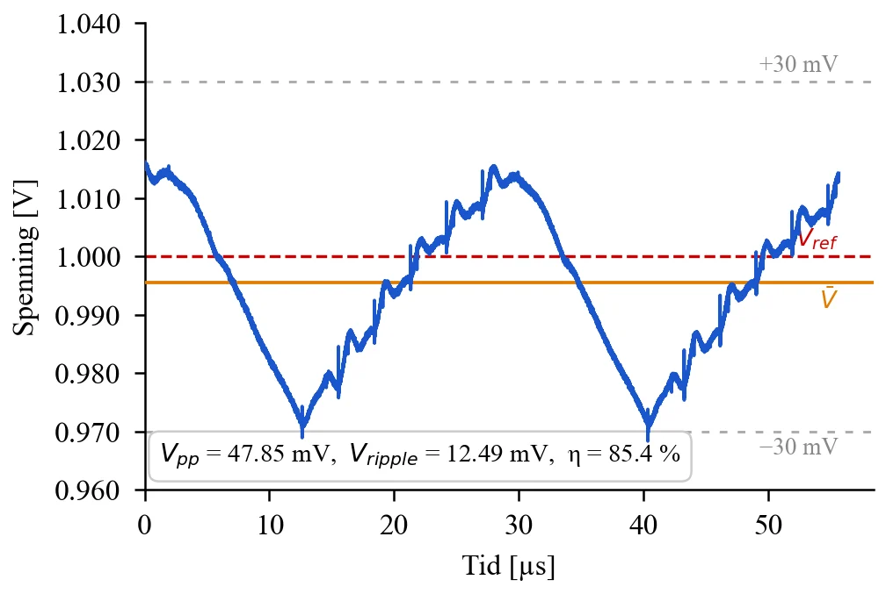

IELS2031 Nedstigningsomformer 5 V til 1 V
Design, simulering, bygging og testing av en synkron nedstigningsomformer i emnet IELS2031 Elektronikkonstruksjon ved NTNU. Gruppeprosjekt på to.

Oppgaven
Regulere en inngangsspenning på 5 V ned til 1 V, med utgangsspenning innenfor ±30 mV og ripple på ±30 mV. Kravene gjelder for fire laster: 0,5, 1, 10 og 100 ohm, altså laststrømmer fra 10 mA til 2 A.
Kretsen er bygget rundt LTC3807, en synkron buck-kontroller fra Analog Devices, med svitsjefrekvens på 350 kHz.
Revisjon 1 og feilsøking
Første revisjon virket ved lett last, men utgangsspenningen kollapset til rundt 0,4 V ved lasten på 0,5 ohm. Målingene stemte ikke med beregningene, så feilen lå trolig i implementeringen, ikke i dimensjoneringen.
Ved gjennomgang av layouten fant vi en koblingsfeil mellom gaten til topp-MOSFET-en og drainen til bunn-MOSFET-en. Det hindret riktig styring av switch-noden, og strømmen gikk i stedet gjennom body-diodene, som gir store tap ved høy strøm.
Revisjon 2
Layouten ble tegnet om i KiCad med riktig kobling, kompakt hot loop og bedre returstrømmer. Komponentverdiene ble også justert for større margin: spole 4,7 µH, utgangskondensator 220 µF og sensemotstand 4 mΩ.
- Alle fire laster oppfyller både spenningskravet og ripplekravet
- Målt ripple (Vpp/2) mellom 4,5 og 23,9 mV
- Høyeste effektivitet 85,4 % ved 1 ohm
- Avviket mellom simulert og målt ripple skyldes blant annet Burst Mode og parasittiske effekter som ikke er med i simuleringen
Hva jeg tar med meg
- Riktig MOSFET-kobling, kompakt layout og kontroll på strømsløyfene avgjør om en svitsjeregulator fungerer i praksis
- Å teste mot beregninger og simulering gjør det mulig å skille layoutfeil fra dimensjoneringsfeil
- Iterasjon over to revisjoner av PCB, fra diagnose til validering
Figurer











